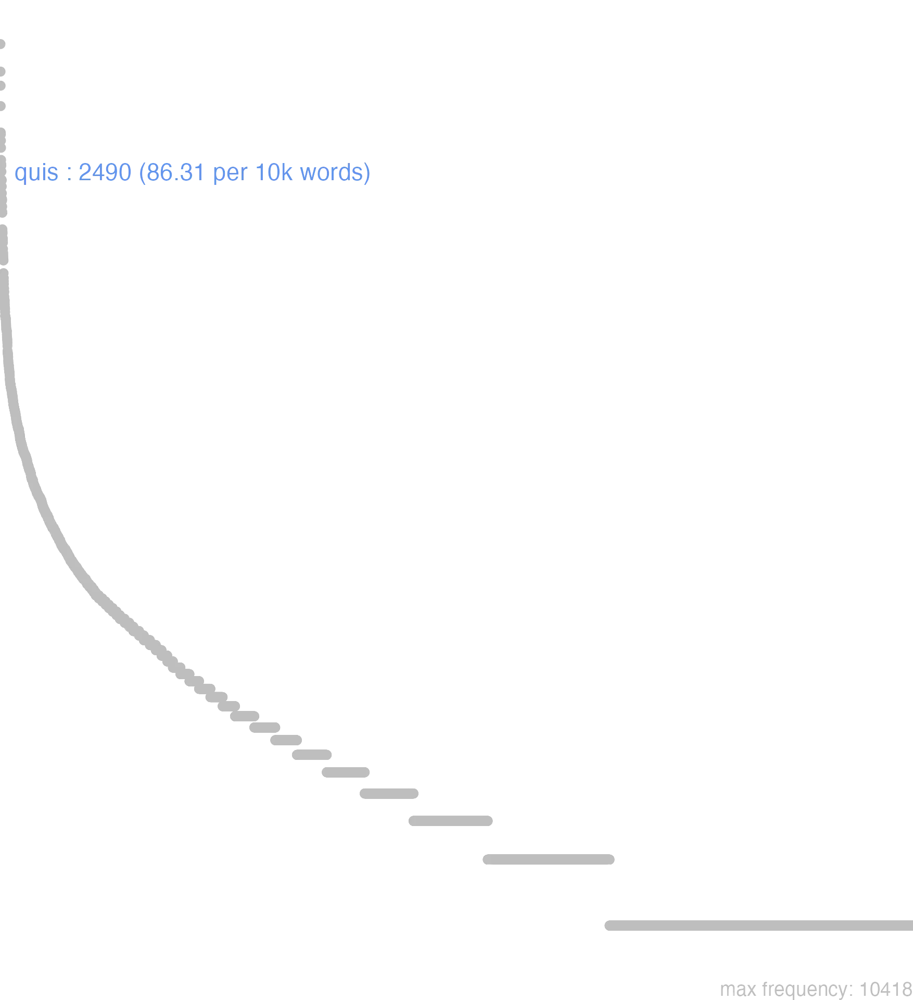

145 quis
145.0.0.1 bases lexicais
id: http://lila-erc.eu/data/id/lemma/121165
classe: pronome
paradigma: pronominal
outras grafias: quisque
variantes do lema:
no data
quĭs
quĭd
quŏd
quisquĕ
no data
145.0.0.2 dicionários tradicionais
cuī
dat. de qui e de quis.
cūius
gen. de qui e quis.
quae
v. qui, quis. quis quae qua, quid quod
pron. interr. ou indef.
Obs.: 1 A forma fem. quae é própria do relat. e emprega-se com significação interrogativa e raramente indefinida. 2 A forma fem. qua só ocorre com significação indefinida.
dat. de qui e de quis.
cūius
gen. de qui e quis.
quae
v. qui, quis. quis quae qua, quid quod
pron. interr. ou indef.
Obs.: 1 A forma fem. quae é própria do relat. e emprega-se com significação interrogativa e raramente indefinida. 2 A forma fem. qua só ocorre com significação indefinida.
1 I-Interr.-Subs.: Quem? qual? que pessoa? que coisa? que?:
2 I-Interr.-Adj.: Qual? de que espécie? de que qualidade? como?:
3 II-Indef.: Algum, alguma, alguém, alguma coisa Cíc. Par. 44.
4 II-Indef.: Algum, alguma, alguém. alguma coisa depois de si, nisi, ne, num, cum, etc.:
[EXEMPLOS]
1
quis clarior in Graecia Themistocle? Cíc. Lae. 42 ‘quem foi mais ilustre na Grecia do que Temístocles?’.
2
quis senator. ..? Cíc. Cat. 2, 12 “qual o senador …?”.
4
num quis…? Cíc. Nat. 3, 87 “acaso alguém…?”.
quōius
= cuius, gen. de qui, quae, quod, ou de quis, quae qua, quid quod.
1 qua
v. quis.
no data
Quae & c. quaecumque
v. Quis, quicumque, & c. Quis quae quod quid l
v. Quis, quicumque, & c. Quis quae quod quid l
1 Cic. quem? qual? algum?
1 Cic. quem? qual? algum?
Plaut. dat., e ablat. de Quis Queis
Quis
1 quem, ou alguem
1 quem, ou alguem
1 todo, qualquer, ou cada hum semper postponitur Numeralibus, sicut & Superlativis, | & etiam Partitivis
[EXEMPLOS]
1
altero quoque anno de dous em dous annos
decimus quisque militum hum de dez soldados
maximus quisque todo o homem grande
optima quaeque todas as cousas boas;
primo quoque tempore no primeiro tempo, que se offerecer
quinto quoque anno fiebat lustrum todos os cinco annos se fazia, etc
no data
145.0.0.3 dados de corpus
![This chart plots collocate by scoreSUBST, for the headword quis here are all the values plotted: collocate: si; scoreSUBST: 0. collocate: enim; scoreSUBST: 0. collocate: ne; scoreSUBST: 0. collocate: sum; scoreSUBST: 0. collocate: quaero; scoreSUBST: 0. collocate: ago; scoreSUBST: 0. collocate: ergo; scoreSUBST: 0. collocate: nescio; scoreSUBST: 0. collocate: ego; scoreSUBST: 0. collocate: tu; scoreSUBST: 0. collocate: tandem; scoreSUBST: 0. collocate: autem; scoreSUBST: 0. collocate: de; scoreSUBST: 0. collocate: dico; scoreSUBST: 0. collocate: possum; scoreSUBST: 0. collocate: facio; scoreSUBST: 0. collocate: sed; scoreSUBST: 0. collocate: scio; scoreSUBST: 0. collocate: uideo; scoreSUBST: 0. collocate: uolo; scoreSUBST: 0. collocate: igitur; scoreSUBST: 0. collocate: num; scoreSUBST: 0. collocate: nam; scoreSUBST: 0. collocate: uero; scoreSUBST: 0. collocate: tam; scoreSUBST: 0. collocate: uos; scoreSUBST: 0. collocate: at; scoreSUBST: 0. collocate: fio; scoreSUBST: 0. collocate: modus; scoreSUBST: 2. collocate: intersum; scoreSUBST: 0. collocate: pactum; scoreSUBST: 3. collocate: porro; scoreSUBST: 0. collocate: mirus; scoreSUBST: 0. collocate: quamquam2; scoreSUBST: 0. collocate: opusculum; scoreSUBST: 2. collocate: dubito; scoreSUBST: 0. collocate: umquam; scoreSUBST: 0. collocate: exspecto; scoreSUBST: 0. collocate: refert; scoreSUBST: 0. collocate: for; scoreSUBST: 0. collocate: memoro; scoreSUBST: 0. collocate: considero; scoreSUBST: 0. collocate: tametsi; scoreSUBST: 0. collocate: ignoro; scoreSUBST: 0. collocate: proficio; scoreSUBST: 0. collocate: iuuo; scoreSUBST: 0. collocate: celeritas; scoreSUBST: 2. collocate: quaeso; scoreSUBST: 0. collocate: etenim; scoreSUBST: 0. collocate: requiro; scoreSUBST: 0](./Media/wordcloud__xx113-117-105-115xx__BY_collocate_scoreSUBST.webp)
![This chart plots collocate by scoreADJ, for the headword quis here are all the values plotted: collocate: si; scoreADJ: 0. collocate: enim; scoreADJ: 0. collocate: ne; scoreADJ: 0. collocate: sum; scoreADJ: 0. collocate: quaero; scoreADJ: 0. collocate: ago; scoreADJ: 0. collocate: ergo; scoreADJ: 0. collocate: nescio; scoreADJ: 0. collocate: ego; scoreADJ: 0. collocate: tu; scoreADJ: 0. collocate: tandem; scoreADJ: 0. collocate: autem; scoreADJ: 0. collocate: de; scoreADJ: 0. collocate: dico; scoreADJ: 0. collocate: possum; scoreADJ: 0. collocate: facio; scoreADJ: 0. collocate: sed; scoreADJ: 0. collocate: scio; scoreADJ: 0. collocate: uideo; scoreADJ: 0. collocate: uolo; scoreADJ: 0. collocate: igitur; scoreADJ: 0. collocate: num; scoreADJ: 0. collocate: nam; scoreADJ: 0. collocate: uero; scoreADJ: 0. collocate: tam; scoreADJ: 0. collocate: uos; scoreADJ: 0. collocate: at; scoreADJ: 0. collocate: fio; scoreADJ: 0. collocate: modus; scoreADJ: 0. collocate: intersum; scoreADJ: 0. collocate: pactum; scoreADJ: 0. collocate: porro; scoreADJ: 0. collocate: mirus; scoreADJ: 2. collocate: quamquam2; scoreADJ: 0. collocate: opusculum; scoreADJ: 0. collocate: dubito; scoreADJ: 0. collocate: umquam; scoreADJ: 0. collocate: exspecto; scoreADJ: 0. collocate: refert; scoreADJ: 0. collocate: for; scoreADJ: 0. collocate: memoro; scoreADJ: 0. collocate: considero; scoreADJ: 0. collocate: tametsi; scoreADJ: 0. collocate: ignoro; scoreADJ: 0. collocate: proficio; scoreADJ: 0. collocate: iuuo; scoreADJ: 0. collocate: celeritas; scoreADJ: 0. collocate: quaeso; scoreADJ: 0. collocate: etenim; scoreADJ: 0. collocate: requiro; scoreADJ: 0](./Media/wordcloud__xx113-117-105-115xx__BY_collocate_scoreADJ.webp)
![This chart plots collocate by scoreVERBO, for the headword quis here are all the values plotted: collocate: si; scoreVERBO: 0. collocate: enim; scoreVERBO: 0. collocate: ne; scoreVERBO: 0. collocate: sum; scoreVERBO: 4. collocate: quaero; scoreVERBO: 4. collocate: ago; scoreVERBO: 4. collocate: ergo; scoreVERBO: 0. collocate: nescio; scoreVERBO: 4. collocate: ego; scoreVERBO: 0. collocate: tu; scoreVERBO: 0. collocate: tandem; scoreVERBO: 0. collocate: autem; scoreVERBO: 0. collocate: de; scoreVERBO: 0. collocate: dico; scoreVERBO: 2. collocate: possum; scoreVERBO: 2. collocate: facio; scoreVERBO: 2. collocate: sed; scoreVERBO: 0. collocate: scio; scoreVERBO: 2. collocate: uideo; scoreVERBO: 2. collocate: uolo; scoreVERBO: 2. collocate: igitur; scoreVERBO: 0. collocate: num; scoreVERBO: 0. collocate: nam; scoreVERBO: 0. collocate: uero; scoreVERBO: 0. collocate: tam; scoreVERBO: 0. collocate: uos; scoreVERBO: 0. collocate: at; scoreVERBO: 0. collocate: fio; scoreVERBO: 2. collocate: modus; scoreVERBO: 0. collocate: intersum; scoreVERBO: 2. collocate: pactum; scoreVERBO: 0. collocate: porro; scoreVERBO: 0. collocate: mirus; scoreVERBO: 0. collocate: quamquam2; scoreVERBO: 0. collocate: opusculum; scoreVERBO: 0. collocate: dubito; scoreVERBO: 2. collocate: umquam; scoreVERBO: 0. collocate: exspecto; scoreVERBO: 2. collocate: refert; scoreVERBO: 2. collocate: for; scoreVERBO: 2. collocate: memoro; scoreVERBO: 2. collocate: considero; scoreVERBO: 2. collocate: tametsi; scoreVERBO: 0. collocate: ignoro; scoreVERBO: 2. collocate: proficio; scoreVERBO: 2. collocate: iuuo; scoreVERBO: 2. collocate: celeritas; scoreVERBO: 0. collocate: quaeso; scoreVERBO: 2. collocate: etenim; scoreVERBO: 0. collocate: requiro; scoreVERBO: 2](./Media/wordcloud__xx113-117-105-115xx__BY_collocate_scoreVERBO.webp)
![This chart plots collocate by scoreADV, for the headword quis here are all the values plotted: collocate: si; scoreADV: 0. collocate: enim; scoreADV: 5. collocate: ne; scoreADV: 0. collocate: sum; scoreADV: 0. collocate: quaero; scoreADV: 0. collocate: ago; scoreADV: 0. collocate: ergo; scoreADV: 0. collocate: nescio; scoreADV: 0. collocate: ego; scoreADV: 0. collocate: tu; scoreADV: 0. collocate: tandem; scoreADV: 4. collocate: autem; scoreADV: 0. collocate: de; scoreADV: 0. collocate: dico; scoreADV: 0. collocate: possum; scoreADV: 0. collocate: facio; scoreADV: 0. collocate: sed; scoreADV: 0. collocate: scio; scoreADV: 0. collocate: uideo; scoreADV: 0. collocate: uolo; scoreADV: 0. collocate: igitur; scoreADV: 2. collocate: num; scoreADV: 3. collocate: nam; scoreADV: 2. collocate: uero; scoreADV: 2. collocate: tam; scoreADV: 2. collocate: uos; scoreADV: 0. collocate: at; scoreADV: 0. collocate: fio; scoreADV: 0. collocate: modus; scoreADV: 0. collocate: intersum; scoreADV: 0. collocate: pactum; scoreADV: 0. collocate: porro; scoreADV: 3. collocate: mirus; scoreADV: 0. collocate: quamquam2; scoreADV: 2. collocate: opusculum; scoreADV: 0. collocate: dubito; scoreADV: 0. collocate: umquam; scoreADV: 2. collocate: exspecto; scoreADV: 0. collocate: refert; scoreADV: 0. collocate: for; scoreADV: 0. collocate: memoro; scoreADV: 0. collocate: considero; scoreADV: 0. collocate: tametsi; scoreADV: 0. collocate: ignoro; scoreADV: 0. collocate: proficio; scoreADV: 0. collocate: iuuo; scoreADV: 0. collocate: celeritas; scoreADV: 0. collocate: quaeso; scoreADV: 0. collocate: etenim; scoreADV: 2. collocate: requiro; scoreADV: 0](./Media/wordcloud__xx113-117-105-115xx__BY_collocate_scoreADV.webp)
![This chart plots collocate by scoreFUNC, for the headword quis here are all the values plotted: collocate: si; scoreFUNC: 50. collocate: enim; scoreFUNC: 0. collocate: ne; scoreFUNC: 40. collocate: sum; scoreFUNC: 0. collocate: quaero; scoreFUNC: 0. collocate: ago; scoreFUNC: 0. collocate: ergo; scoreFUNC: 0. collocate: nescio; scoreFUNC: 0. collocate: ego; scoreFUNC: 0. collocate: tu; scoreFUNC: 0. collocate: tandem; scoreFUNC: 0. collocate: autem; scoreFUNC: 0. collocate: de; scoreFUNC: 20. collocate: dico; scoreFUNC: 0. collocate: possum; scoreFUNC: 0. collocate: facio; scoreFUNC: 0. collocate: sed; scoreFUNC: 0. collocate: scio; scoreFUNC: 0. collocate: uideo; scoreFUNC: 0. collocate: uolo; scoreFUNC: 0. collocate: igitur; scoreFUNC: 0. collocate: num; scoreFUNC: 0. collocate: nam; scoreFUNC: 0. collocate: uero; scoreFUNC: 0. collocate: tam; scoreFUNC: 0. collocate: uos; scoreFUNC: 0. collocate: at; scoreFUNC: 0. collocate: fio; scoreFUNC: 0. collocate: modus; scoreFUNC: 0. collocate: intersum; scoreFUNC: 0. collocate: pactum; scoreFUNC: 0. collocate: porro; scoreFUNC: 0. collocate: mirus; scoreFUNC: 0. collocate: quamquam2; scoreFUNC: 0. collocate: opusculum; scoreFUNC: 0. collocate: dubito; scoreFUNC: 0. collocate: umquam; scoreFUNC: 0. collocate: exspecto; scoreFUNC: 0. collocate: refert; scoreFUNC: 0. collocate: for; scoreFUNC: 0. collocate: memoro; scoreFUNC: 0. collocate: considero; scoreFUNC: 0. collocate: tametsi; scoreFUNC: 20. collocate: ignoro; scoreFUNC: 0. collocate: proficio; scoreFUNC: 0. collocate: iuuo; scoreFUNC: 0. collocate: celeritas; scoreFUNC: 0. collocate: quaeso; scoreFUNC: 0. collocate: etenim; scoreFUNC: 0. collocate: requiro; scoreFUNC: 0](./Media/wordcloud__xx113-117-105-115xx__BY_collocate_scoreFUNC.webp)
![This charts plots the frequency of lemma by author_Frequencies. The Horatius subcorpus registers the highest normalized frequency, with the value of 103.01 and an absolute frequency of 116. The Cicero subcorpus follows, with a normalized frequency of 97.31 and an absolute frequency of 1562. the subcorpus with the least normalized frequency is Suetonius with the normalized value of 11.03 and an absolute freqeuncy of 1. here are all the values: subcorpus: Caesar ; normalized frequency: 108 ; absolute frequency: 40.7885791978246. subcorpus: Cicero ; normalized frequency: 1562 ; absolute frequency: 97.3063217961177. subcorpus: Horatius ; normalized frequency: 116 ; absolute frequency: 103.010389841044. subcorpus: Ovidius ; normalized frequency: 36 ; absolute frequency: 61.770761839396. subcorpus: Phaedrus ; normalized frequency: 27 ; absolute frequency: 40.9898284499772. subcorpus: Sallustius ; normalized frequency: 47 ; absolute frequency: 43.5952138020592. subcorpus: Seneca ; normalized frequency: 519 ; absolute frequency: 96.8626938653627. subcorpus: Suetonius ; normalized frequency: 1 ; absolute frequency: 11.0253583241455. subcorpus: Tacitus ; normalized frequency: 6 ; absolute frequency: 20.5973223480947. subcorpus: Vergilius ; normalized frequency: 43 ; absolute frequency: 83.011583011583. subcorpus: Hieronymus ; normalized frequency: 25 ; absolute frequency: 56.1671534486632](./Media/barchart__xx113-117-105-115xx__lemma_BY_author_Frequencies.webp)
![This charts plots the frequency of lemma by genre_Frequencies. The Prosa.oratória subcorpus registers the highest normalized frequency, with the value of 106.48 and an absolute frequency of 1109. The Poesia.didática subcorpus follows, with a normalized frequency of 50.05 and an absolute frequency of 59. the subcorpus with the least normalized frequency is Prosa.histórica with the normalized value of 39.44 and an absolute freqeuncy of 162. here are all the values: subcorpus: Prosa.histórica ; normalized frequency: 162 ; absolute frequency: 39.4362082816037. subcorpus: Prosa.filosófica ; normalized frequency: 550 ; absolute frequency: 90.6080624701405. subcorpus: Prosa.oratória ; normalized frequency: 1109 ; absolute frequency: 106.477969909652. subcorpus: Prosa.epistolográfica ; normalized frequency: 304 ; absolute frequency: 80.5532738016376. subcorpus: Poesia.lírica ; normalized frequency: 120 ; absolute frequency: 100.950618322537. subcorpus: Poesia.didática ; normalized frequency: 59 ; absolute frequency: 50.0466536601917. subcorpus: Poesia.trágica ; normalized frequency: 118 ; absolute frequency: 102.501737317582. subcorpus: Poesia.épica ; normalized frequency: 43 ; absolute frequency: 83.011583011583. subcorpus: Prosa.ficcional ; normalized frequency: 25 ; absolute frequency: 56.1671534486632](./Media/barchart__xx113-117-105-115xx__lemma_BY_genre_Frequencies.webp)
![This charts plots the frequency of lemma by period_Frequencies. The I.d.C. subcorpus registers the highest normalized frequency, with the value of 88.42 and an absolute frequency of 578. The I.a.C. subcorpus follows, with a normalized frequency of 87.5 and an absolute frequency of 1880. the subcorpus with the least normalized frequency is II.d.C. with the normalized value of 18.32 and an absolute freqeuncy of 7. here are all the values: subcorpus: I.a.C. ; normalized frequency: 1880 ; absolute frequency: 87.5029090062835. subcorpus: I.d.C. ; normalized frequency: 578 ; absolute frequency: 88.4197644179287. subcorpus: II.d.C. ; normalized frequency: 7 ; absolute frequency: 18.3246073298429. subcorpus: IV.d.C. ; normalized frequency: 25 ; absolute frequency: 56.1671534486632](./Media/barchart__xx113-117-105-115xx__lemma_BY_period_Frequencies.webp)
quid porro
Sen.Helv.9.7
O que mais? [JDD]
quid quaeris
Cic.Att.1.14.6
O que mais queres? [JDD]
quid refert
Cic.Phil.7.14.9
Que importa? [JDD]
quid ergo
Cic.Att.2.1.8
E então? [JDD]
sed quid Curio
Cic.Att.3.15.3
Mas, e Curião? [JDD]
quid de bonis
Cic.Att.3.15.6
E a respeito dos meus bens? [JDD]
quid exspectatis amplius
Cic.Cael.55
O que mais esperais? [JDD]
num quis obiecit
Cic.Cael.56
Acaso alguém lhe imputou algo? [JDD, de outra edição]
sed quid ago
Cic.Att.1.16.10
Mas o que estou fazendo? [JDD]
illud uero quid est
Cic.Font.Fr.1
Mas o que é isso? [JDD]
quid uotis opus est
Sen.Ep.31.5
Para que é necessário súplicas? [JDD]
at quod erat tempus
Cic.Mil.39
Mas que circunstância era essa? [JDD]
quid igitur causae fuit
Cic.Att.4.2.5
“Qual foi, portanto, o motivo?” [JDD]
quid opus est terrore
Cic.Mil.57
Para que é preciso torturador? [JDD, de outra edição]
nam quid agis aliud
Cic.Lig.11
Pois que outra coisa buscas? [JDD]
quid terrarum iuuare nouitas potest
Sen.Ep.28.2
O que pode te ajudar a novidade das terras? [JDD]
quid Milonis intererat interfici Clodium
Cic.Mil.34
Que interesse tinha Milão em que Clódio fosse assassinado? [JDD]
sed quid opus est plura
Cic.Sen.3
Mas por que é preciso mais? [JDD]
quae sunt igitur meae partes
Cic.Balb.1
Qual é, portanto, o meu papel? [JDD]
suspenso animo exspecto quid agat
Cic.Att.4.15.10
Estou com o espírito em suspense na expectativa do que ele faça. [JDD]
quid autem turpius quam illudi
Cic.Amici.99
Ora, o que é mais vergonhoso do que ser iludido? [JDD, de outra edição]
falsum sed tamen quid hoc
Cic.Att.1.16.10
Falso, mas enfim: “o quê?”, eu digo, “isto [JDD]
quid arbitramur in uera facturos fuisse
Cic.Amici.24
o que achamos que teriam feito numa verdadeira? [JDD]
si quid habes certius velim scire
Cic.Att.4.10.1
Se tens algo mais certo, gostaria de saber. [JDD]
secreta thalami fare quo excipias modo
Sen.Oed.805
Fala como sabes esses segredos de um matrimônio. [JDD]
ipsius autem ueneni quae ratio fingitur
Cic.Cael.58
Já do veneno em si, que razão é inventada? [JDD]
quid faciemus si aliter non possumus
Cic.Att.2.1.8
O que vamos fazer se não podemos de outro modo? [JDD]
de muro quid opus sit videbis
Cic.Att.2.7.5
Quanto ao muro, verás o que é necessário. [JDD]
nam quid foedius nostra vita praecipue mea
Cic.Att.4.6.1
Pois o que há de mais ignominioso do que nossa vida, especialmente a minha? [JDD]
quis autem umquam tanto damno senatorem coegit
Cic.Phil.1.12.12
Por outro lado, quem algum dia obrigou um senador com tanto dano? [JDD]
nunc uero quae tua est ista uita
Cic.Catil.1.16.4
Mas agora, que vida é essa tua? [JDD]
praeterea de muro statue quid faciendum sit
Cic.Att.2.6.2
Além disso, decide o que deve ser feito com relação ao muro. [JDD]
ait nescio quem ex eo numero seruum iudicatum
Cic.Deiot.24
Diz que não sei quem desse número foi considerado um escravo. [JDD]
ad illam celeritatem adde etiam si quid potes
Cic.Att.2.24.1
Àquela rapidez acrescenta ainda mais, se podes. [JDD]
quo tandem animo hoc tyrannum illum tulisse creditis
Cic.Mil.35
Com que espírito, enfim, acreditais que aquele tirano suportou isto? [JDD]
in qua tandem urbe hoc homines stultissimi disputant
Cic.Mil.7
Em que cidade afinal homens estultíssimos sustentam isso? [JDD]
num quid simile populus Romanus audierat aut uiderat
Cic.Amici.41
Por acaso o povo romano tinha ouvido ou tinha visto algo semelhante? [JDD]
quid de his cogites et quando scire velim
Cic.Att.5.3.1
Eu gostaria de saber o que pensas desses assuntos e quando. [JDD]
quid igitur hunc paucorum annorum accessio iuuare potuisset
Cic.Amici.11
Portanto, em que poderia ajudá-lo o acréscimo de uns poucos anos? [JDD]
Galliam quo tandem animo hanc rem audituram putatis
Cic.Phil.12.9.9
Com que ânimo afinal achais que a Gália vai ouvir isso? [JDD]
quid si ne potest quidem ulla esse pax
Cic.Phil.12.11.1
E se, na verdade, não pode haver nenhuma paz? [JDD]
quid fari queam inter tumultus mentis attonitae uagus
Sen.Oed.328
O que poderei falar indeciso em meio ao tumulto de minha mente atônita? [JDD]
quae fuit igitur umquam in ullo homine tanta constantia
Cic.Lig.26
Portanto, que constância tão grande houve alguma vez em algum homem? [JDD]
quid si cessare libeat et in oti portum confugere
Cic.Att.4.6.2
E se me der vontade de retirar-me e refugiar-me no porto do ócio? [JDD]
etiam si futurum est quid iuuat dolori suo occurrere
Sen.Ep.13.10
Se ainda vai ocorrer, de que adianta ir ao seu encontro já com dor? [JDD]
ortum quidem amicitiae uidetis nisi quid ad haec forte uultis
Cic.Amici.32
Vedes, na verdade, o nascimento da amizade, a não ser que por acaso queirais acrescentar algo a essas coisas. [JDD]
quamquam o di boni quid est in hominis natura diu
Cic.Sen.69
Aliás, ó deuses bons! o que é longo tempo na natureza dos homem? [JDD]
num quis denique fecisset mentionem si hic nullius nomen detulisset
Cic.Cael.56
Enfim, acaso alguém teria feito menção a ele, se ele não tivesse delatado o nome de ninguém? [JDD]
hoc quid intersit si tuos digitos novi certe habes subductum
Cic.Att.5.21.13
Com certeza, se conheço os teu dedos, tens já calculado a diferença que isso faz. [JDD]
hanc uero taeterrimam beluam quis ferre potest aut quo modo
Cic.Phil.3.28.6
Na verdade, quem pode suportar esse abominável monstro ou de que modo? [JDD]
145.0.0.4 Diagrama de Zipf
